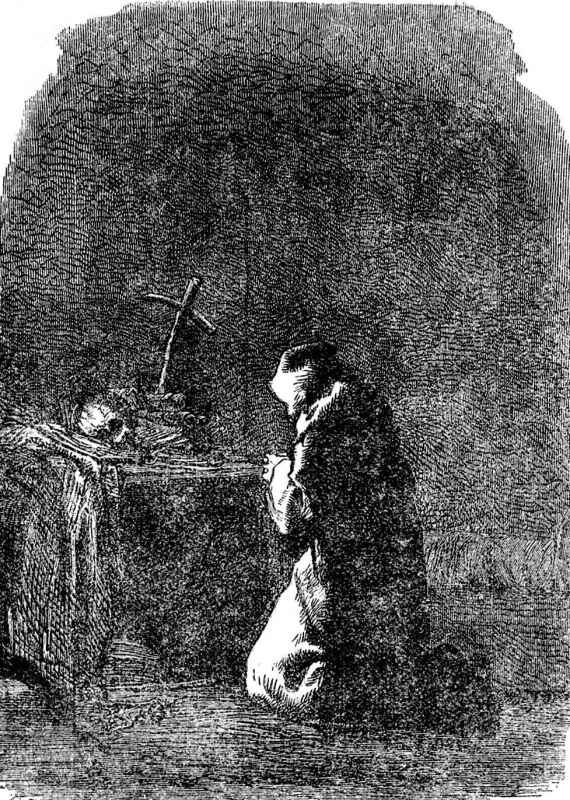

本书是一个剧本，其中的主要角色是无极。
人是次要角色。
既是这样，我们在路上又遇到了一个修院，我们便应当走进去。为什么？因为修院，西方有，东方也有，现代有，古代也有，基督教有，异教、佛教、伊斯兰教也都有，它是人类指向无极的测量仪。
这里不是过分发挥某些思想的地方，不过，在绝对坚持我们的保留态度时，我们的容忍，甚至我们的愤慨，我们应当这样说，每次当我们遇见无极存在于一个人的心中时，无论他的理解程度如何，我们总会感到肃然起敬。圣殿、清真寺、菩萨庙、神舍，所有那些地方都有它丑恶的一面，是我们所唾弃的，同时也有它卓绝的一面，是我们所崇敬的。人类心中的静观和冥想是了无止境的，是照射在人类墙壁上的上帝的光辉。